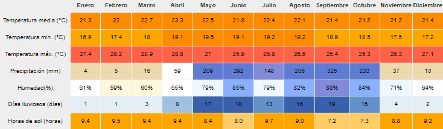

Más sobre San Ahuachapán...

Ahuachapán
El departamento de Ahuachapán (del náhuat ajwechapan, "río de rocío") es el más occidental de los 14 departamentos en los que está dividida la República de El Salvador. Su cabecera, la ciudad de Ahuachapán, se encuentra a 100 km de San Salvador (capital de la república).
Más info...
Municipios
- Ahuachapán
- Apaneca
- Atiquizaya
- Concepción de Atáco
- El Refugio
- Guaymango
- Jujutla
- San Francisco Meléndez
- San Lorenzo
- San Pedro Puxtla
- Tacuba
- Turín

Datos Históricos
·Fue creado por el Decreto Legislativo del 9 de febrero de 1869 durante la administración de Francisco Dueñas. En el 9 de febrero, la Cámara de Diputados, considerando que los Distritos de Ahuachapán y Atiquizaya tenían el suficiente número de habitantes para formar un Departamento y que su separación del Departamento de Santa Ana "refluye en beneficio de la más eficaz administración", dio el decreto que erige en Departamento los distritos.
Ver más...· El decreto fue dado en la Cámara de Senadores en el 12 de febrero y ejecutado por el presidente Francisco Dueñas en el 13 de febrero de 1869.
·En el 18 de febrero, la Municipalidad de Ahuachapán propuso al gobierno el nombramiento de su Diputado Don Fabio Morán para el puesto de Gobernador departamental.

Hidrografía
Ríos
- Paz
- San Pedro
- Río Grande
Lagunas
- El Espino
- Del Llano
- Del Morán
- Verde
- Las Ninfas
- De Bijagual

Personajes
- Dr. Alfredo Espino
- Gral. Francisco Menéndez
- Dr. Alvaro Magaña
- Mario Benjamín Castro
- Santiago José Celis

Otros datos interesantes...
Demografía
·
El departamento de Ahuachapán de acuerdo con el censo de población de 2007, en términos de raza el departamento tenía:
► 91.26% Mestizos
► 8.51% Blancos
► 0.10% Negros
► 0.07% Otros
► 0.06% Indígenas
Costumbres y tradiciones
· Fiestas Patronales en honor al Dulce Nombre de Jesús que se celebran los primeros días del mes de febrero. La elección de la reina de las Fiestas será el 27 de enero, a las siete de la noche
· La elección de la reina de las Fiestas será el 27 de enero, a las siete de la noche.
Clima
En El Salvador existen dos estaciones y dos transiciones durante el año: la estación seca (14 de noviembre al 19 de abril) y la estación lluviosa (21 de mayo al 16 de octubre); y las transiciones seca-lluviosa (20 de abril al 20 de mayo) y lluviosa-seca (17 de octubre al 13 de noviembre).
Ahuachapán es una de las regiones más cálidas de El Salvador y tiene una temperatura media diaria máxima de 33 grados centígrados. El clima es muy cálido, con una media anual de 33 grados, pero tiene pocos meses verdaderamente tropicales y bochornosos. Hace calor todo el año. Debido a la estación más seca, la mejor época para viajar es de noviembre a abril. La mayoría de las precipitaciones caen de mayo a octubre.
| Parámetros climáticos promedios Ahuachapán | |||||||||||||
|---|---|---|---|---|---|---|---|---|---|---|---|---|---|
|  | |||||||||||||